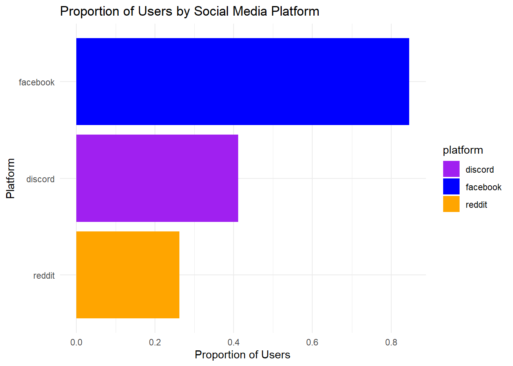
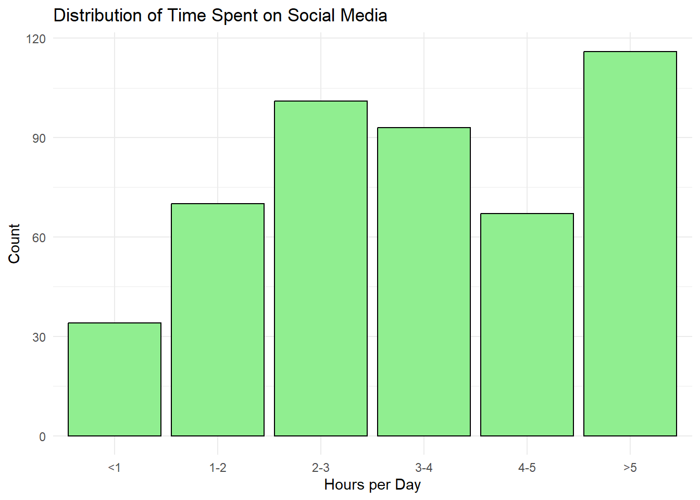
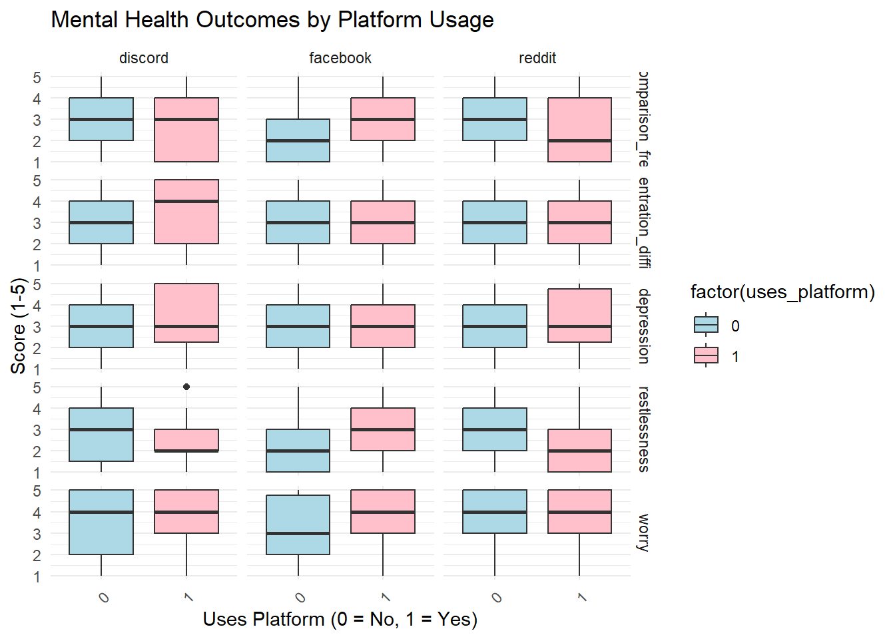
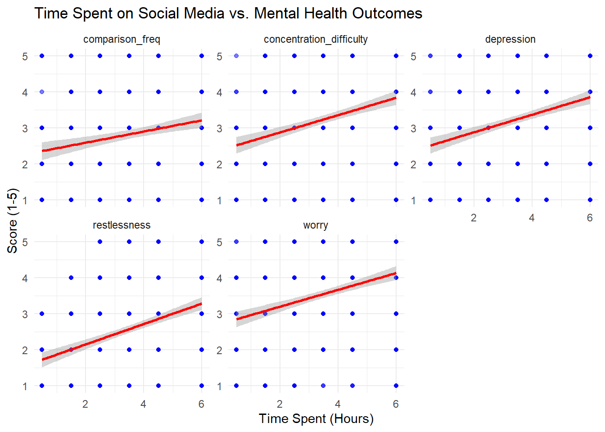
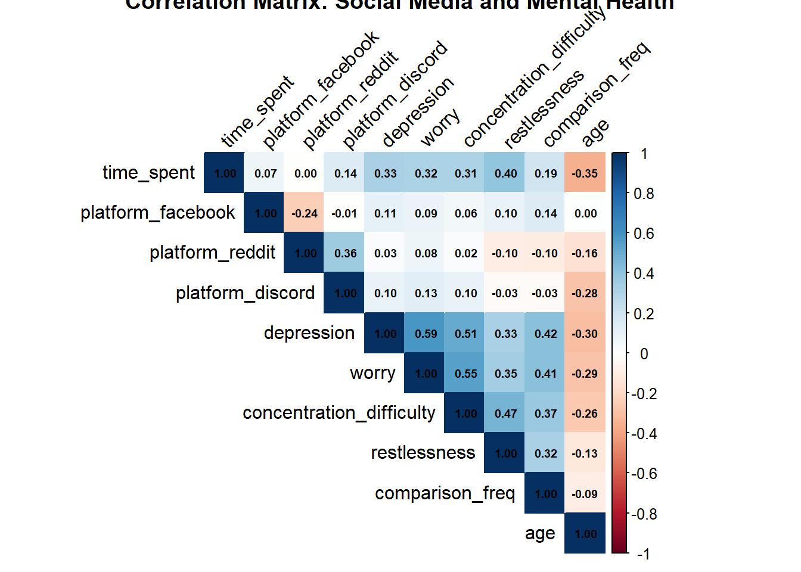
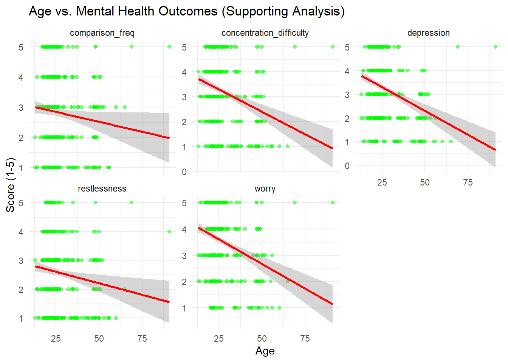

library(here)
library(readr)
library(dplyr)
library(ggplot2)
library(rsample)
library(skimr)
library(corrplot)
library(naniar)
library(tidyr)
library(stringr)
library(purrr)Social Media and Mental Health
Motivation and Context
Today more and more people are using social media, compared to just ten years ago social media usage has consistently grown, a trend that has increased particularly drastically during the Wuhan Corona Virus Lockdowns. However during this same time, there is considerable evidence showing that various measures of mental health such as anxiety, self-esteem, and depression have worsened. The notable similarity between two trends provides ample background for the questioning of a potential connection or correlation between the use of social media, and the prevalence of poor mental health.
My background as a stats and probability major inspired me to analyze this through a statistics lens, and so for Math437, I chose to analyze the dataset “Social Media and Mental Health”, which includes variables like time spent on social media, platform preferences, and demographic factors, alongside 12 measures of mental health (Validation sought from social media, and restlessness from lack of use) for my final project. By combining the trends found in this dataset, with context from other similar studies, I hope to better understand, and to expose the connections between social media, and mental health.
Main Objective
The primary goal is to analyze specific social media usage patterns, such as time spent online or preferred platforms, and determine the correlation with mental health, through predictors such as low self esteem, time spent doom scrolling(browsing social media without a specific purpose), and distractibility scores self reported in the “Social Media and Mental Health” dataset. Using statistical methods in R, I will analyze the data and see how social media usage may influence mental health, and whether specific factors such as time spent per day, type of social media use, or age have compounding effects.
Packages Used In This Analysis
| Package | Use |
|---|---|
| here | to easily load and save data |
| readr | to import the CSV file data |
| dplyr | to massage and summarize data |
| rsample | to split data into training and test sets |
| ggplot2 | to create nice-looking and informative graphs |
| skimr | to create summary statistics |
| corrplot | to visualize correlation matrices |
| [Naniar] [tidyr]https://tidyr.tidyverse.org//) | remove missing data |
| Stringr | to create dummy variables from responses. |
| [tidyr]https://tidyr.tidyverse.org//) | remove missing data |
Data Description
I am using the ‘Social Media and Mental Health’ dataset, compiled by Souvik Ahmed and sourced from Kaggle (https://www.kaggle.com/datasets/souvikahmed071/social-media-and-mental-health?select=smmh.csv),. The dataset was acquired through an online survey, likely administered via Google Forms, and distributed via fliers at the University of Liberal Arts Bangladesh (ULAB) in Dhaka.
Comprising 481 observations and 21 columns, the dataset includes seven predictor variables—age, gender, occupation, organizational affiliation, frequency of social media use, types of social media platforms used, and average daily time spent—and twelve response variables: frequency of aimless social media use (“doom scrolling”), restlessness when not using social media, ease of distraction, level of worry, difficulty concentrating, frequency of comparing oneself to successful people, feelings about these comparisons, frequency of seeking validation from social media, depression levels, fluctuations in interest in daily activities, sleep issues, and self-esteem.
smmh_data <- read_csv("smmh.csv")Data Limitations
The survey’s distribution lacks detailed documentation on collection methods or selection, potentially allowing potential selection bias. Furthermore this distribution may over-represent ULAB students, people who already use the internet more, or college students, limiting the sample’s representativeness for broader populations. Self-reported data, including predictor variables and response variables , are susceptible to recall bias and social desirability bias, where respondents may under- or over-report behaviors or symptoms. Notably, the dataset, likely collected 2022 in Bangladesh, reflects a snapshot of one time and place and so factors such as social media access, mental health stigma, or heightened usage may reduce its applicability to other regions or time periods. Additionally, non-standard variables like frequency of aimless social media use and ease of distraction rely on subjective survey questions, which may not align with professional mental health measures. These variables may require interpretation, introducing potential human error or bias. The absence of information on survey oversight, complicates the assessment of data quality and generalizability, meaning the findings in the study should be taken with a grain of salt.
Data Wrangling (Optional Section)
# Clear any lingering variables
rm(list = ls())
# Set seed for reproducibility
set.seed(69)
# 1. Import and inspect the dataset
cat("Step 1: Importing data\n")Step 1: Importing datasmmh_data <- read_csv("smmh.csv")Rows: 481 Columns: 21
── Column specification ────────────────────────────────────────────────────────
Delimiter: ","
chr (8): Timestamp, 2. Gender, 3. Relationship Status, 4. Occupation Status...
dbl (13): 1. What is your age?, 9. How often do you find yourself using Soci...
ℹ Use `spec()` to retrieve the full column specification for this data.
ℹ Specify the column types or set `show_col_types = FALSE` to quiet this message.# Verify column names
cat("Column names in smmh_data:\n")Column names in smmh_data:print(colnames(smmh_data)) [1] "Timestamp"
[2] "1. What is your age?"
[3] "2. Gender"
[4] "3. Relationship Status"
[5] "4. Occupation Status"
[6] "5. What type of organizations are you affiliated with?"
[7] "6. Do you use social media?"
[8] "7. What social media platforms do you commonly use?"
[9] "8. What is the average time you spend on social media every day?"
[10] "9. How often do you find yourself using Social media without a specific purpose?"
[11] "10. How often do you get distracted by Social media when you are busy doing something?"
[12] "11. Do you feel restless if you haven't used Social media in a while?"
[13] "12. On a scale of 1 to 5, how easily distracted are you?"
[14] "13. On a scale of 1 to 5, how much are you bothered by worries?"
[15] "14. Do you find it difficult to concentrate on things?"
[16] "15. On a scale of 1-5, how often do you compare yourself to other successful people through the use of social media?"
[17] "16. Following the previous question, how do you feel about these comparisons, generally speaking?"
[18] "17. How often do you look to seek validation from features of social media?"
[19] "18. How often do you feel depressed or down?"
[20] "19. On a scale of 1 to 5, how frequently does your interest in daily activities fluctuate?"
[21] "20. On a scale of 1 to 5, how often do you face issues regarding sleep?" # Inspect structure
cat("Structure of smmh_data:\n")Structure of smmh_data:glimpse(smmh_data)Rows: 481
Columns: 21
$ Timestamp <chr> …
$ `1. What is your age?` <dbl> …
$ `2. Gender` <chr> …
$ `3. Relationship Status` <chr> …
$ `4. Occupation Status` <chr> …
$ `5. What type of organizations are you affiliated with?` <chr> …
$ `6. Do you use social media?` <chr> …
$ `7. What social media platforms do you commonly use?` <chr> …
$ `8. What is the average time you spend on social media every day?` <chr> …
$ `9. How often do you find yourself using Social media without a specific purpose?` <dbl> …
$ `10. How often do you get distracted by Social media when you are busy doing something?` <dbl> …
$ `11. Do you feel restless if you haven't used Social media in a while?` <dbl> …
$ `12. On a scale of 1 to 5, how easily distracted are you?` <dbl> …
$ `13. On a scale of 1 to 5, how much are you bothered by worries?` <dbl> …
$ `14. Do you find it difficult to concentrate on things?` <dbl> …
$ `15. On a scale of 1-5, how often do you compare yourself to other successful people through the use of social media?` <dbl> …
$ `16. Following the previous question, how do you feel about these comparisons, generally speaking?` <dbl> …
$ `17. How often do you look to seek validation from features of social media?` <dbl> …
$ `18. How often do you feel depressed or down?` <dbl> …
$ `19. On a scale of 1 to 5, how frequently does your interest in daily activities fluctuate?` <dbl> …
$ `20. On a scale of 1 to 5, how often do you face issues regarding sleep?` <dbl> …# Summarize missing values
cat("Missing value summary:\n")Missing value summary:miss_summary <- miss_var_summary(smmh_data)
print(miss_summary)# A tibble: 21 × 3
variable n_miss pct_miss
<chr> <int> <num>
1 Timestamp 0 0
2 1. What is your age? 0 0
3 2. Gender 0 0
4 3. Relationship Status 0 0
5 4. Occupation Status 0 0
6 5. What type of organizations are you affiliated with? 0 0
7 6. Do you use social media? 0 0
8 7. What social media platforms do you commonly use? 0 0
9 8. What is the average time you spend on social media every … 0 0
10 9. How often do you find yourself using Social media without… 0 0
# ℹ 11 more rows# 2. Handle missing values (target key predictors)
cat("Step 2: Handling missing values\n")Step 2: Handling missing valuessmmh_clean <- smmh_data %>%
drop_na(
`1. What is your age?`,
`2. Gender`,
`4. Occupation Status`,
`5. What type of organizations are you affiliated with?`,
`6. Do you use social media?`,
`7. What social media platforms do you commonly use?`,
`8. What is the average time you spend on social media every day?`,
`9. How often do you find yourself using Social media without a specific purpose?`
)
# Check if smmh_clean has rows
cat("Rows in smmh_clean after drop_na():", nrow(smmh_clean), "\n")Rows in smmh_clean after drop_na(): 481 if (nrow(smmh_clean) == 0) {
stop("Error: smmh_clean has no rows after drop_na(). Check missing data in key predictors.")
}
# 3. Rename columns, recode variables, and create dummy variables
cat("Step 3: Transforming data\n")Step 3: Transforming data# Define platform name corrections
platform_corrections <- c(
"redit" = "reddit",
"instgram" = "instagram",
"facebok" = "facebook",
"twiter" = "twitter"
)
# Extract and clean unique platforms
cat("Extracting unique platforms\n")Extracting unique platformsunique_platforms <- smmh_clean %>%
pull(`7. What social media platforms do you commonly use?`) %>%
na.omit() %>%
str_split(",\\s*") %>%
unlist() %>%
str_to_lower() %>%
str_trim() %>%
recode(!!!platform_corrections) %>%
unique()
cat("Unique platforms identified:", unique_platforms, "\n")Unique platforms identified: facebook twitter instagram youtube discord reddit pinterest tiktok snapchat if (length(unique_platforms) == 0) {
stop("Error: No unique platforms identified. Check platform column data.")
}
cat("Renaming columns\n")Renaming columnssmmh_clean <- smmh_clean %>%
rename(
timestamp = `Timestamp`,
age = `1. What is your age?`,
gender = `2. Gender`,
relationship_status = `3. Relationship Status`,
occupation = `4. Occupation Status`,
affiliation = `5. What type of organizations are you affiliated with?`,
use_social_media = `6. Do you use social media?`,
time_spent = `8. What is the average time you spend on social media every day?`,
doom_scrolling = `9. How often do you find yourself using Social media without a specific purpose?`,
distraction_busy = `10. How often do you get distracted by Social media when you are busy doing something?`,
restlessness = `11. Do you feel restless if you haven't used Social media in a while?`,
distractibility = `12. On a scale of 1 to 5, how easily distracted are you?`,
worry = `13. On a scale of 1 to 5, how much are you bothered by worries?`,
concentration_difficulty = `14. Do you find it difficult to concentrate on things?`,
comparison_freq = `15. On a scale of 1-5, how often do you compare yourself to other successful people through the use of social media?`,
comparison_feel = `16. Following the previous question, how do you feel about these comparisons, generally speaking?`,
validation = `17. How often do you look to seek validation from features of social media?`,
depression = `18. How often do you feel depressed or down?`,
interest_fluctuation = `19. On a scale of 1 to 5, how frequently does your interest in daily activities fluctuate?`,
sleep_issues = `20. On a scale of 1 to 5, how often do you face issues regarding sleep?`
)
cat("Columns after renaming:", colnames(smmh_clean), "\n")Columns after renaming: timestamp age gender relationship_status occupation affiliation use_social_media 7. What social media platforms do you commonly use? time_spent doom_scrolling distraction_busy restlessness distractibility worry concentration_difficulty comparison_freq comparison_feel validation depression interest_fluctuation sleep_issues cat("Creating cleaned_platforms column\n")Creating cleaned_platforms columnsmmh_clean <- smmh_clean %>%
mutate(
cleaned_platforms = str_to_lower(str_trim(`7. What social media platforms do you commonly use?`)) %>%
recode(!!!platform_corrections)
)
cat("Head of cleaned_platforms:\n")Head of cleaned_platforms:print(head(smmh_clean$cleaned_platforms))[1] "facebook, twitter, instagram, youtube, discord, reddit"
[2] "facebook, twitter, instagram, youtube, discord, reddit"
[3] "facebook, instagram, youtube, pinterest"
[4] "facebook, instagram"
[5] "facebook, instagram, youtube"
[6] "facebook, twitter, instagram, youtube, discord, pinterest, tiktok"if (all(is.na(smmh_clean$cleaned_platforms))) {
stop("Error: cleaned_platforms contains only NA values. Check platform column data.")
}
cat("Creating platform dummy variables\n")Creating platform dummy variables# Test dummy variable creation independently# Debug dummy variable creation
cat("Debugging dummy variable creation\n")Debugging dummy variable creationcat("Unique platforms length:", length(unique_platforms), "\n")Unique platforms length: 9 cat("Unique platforms:", unique_platforms, "\n")Unique platforms: facebook twitter instagram youtube discord reddit pinterest tiktok snapchat cat("Head of cleaned_platforms:\n")Head of cleaned_platforms:print(head(smmh_clean$cleaned_platforms))[1] "facebook, twitter, instagram, youtube, discord, reddit"
[2] "facebook, twitter, instagram, youtube, discord, reddit"
[3] "facebook, instagram, youtube, pinterest"
[4] "facebook, instagram"
[5] "facebook, instagram, youtube"
[6] "facebook, twitter, instagram, youtube, discord, pinterest, tiktok"# Check inputs
if (length(unique_platforms) == 0) {
stop("Error: unique_platforms is empty. Check platform column data.")
}
if (all(is.na(smmh_clean$cleaned_platforms))) {
stop("Error: cleaned_platforms contains only NA values. Check platform column data.")
}
# Create dummy variables
cat("Creating platform dummy variables\n")Creating platform dummy variables# Safely generate dummy variable columns as a dataframe
dummy_df <- map_dfc(unique_platforms, function(platform) {
result <- as.integer(str_detect(smmh_clean$cleaned_platforms, platform))
cat("Dummy variable for", platform, "- first few values:", head(result), "\n")
tibble(!!paste0("platform_", make.names(platform)) := result)
})Dummy variable for facebook - first few values: 1 1 1 1 1 1
Dummy variable for twitter - first few values: 1 1 0 0 0 1
Dummy variable for instagram - first few values: 1 1 1 1 1 1
Dummy variable for youtube - first few values: 1 1 1 0 1 1
Dummy variable for discord - first few values: 1 1 0 0 0 1
Dummy variable for reddit - first few values: 1 1 0 0 0 0
Dummy variable for pinterest - first few values: 0 0 1 0 0 1
Dummy variable for tiktok - first few values: 0 0 0 0 0 1
Dummy variable for snapchat - first few values: 0 0 0 0 0 0 # Bind to the main dataframe
smmh_clean <- bind_cols(smmh_clean, dummy_df)# No need to recreate dummy_df or bind it again — it's already done.
cat("Columns after dummy variables:", colnames(smmh_clean), "\n")Columns after dummy variables: timestamp age gender relationship_status occupation affiliation use_social_media 7. What social media platforms do you commonly use? time_spent doom_scrolling distraction_busy restlessness distractibility worry concentration_difficulty comparison_freq comparison_feel validation depression interest_fluctuation sleep_issues cleaned_platforms platform_facebook platform_twitter platform_instagram platform_youtube platform_discord platform_reddit platform_pinterest platform_tiktok platform_snapchat # Recode other variables
cat("Recoding other variables\n")Recoding other variablessmmh_clean <- smmh_clean %>%
mutate(
use_social_media = case_when(
use_social_media == "Yes" ~ 1,
use_social_media == "No" ~ 0,
TRUE ~ NA_real_
),
gender = case_when(
gender == "Male" ~ 1,
gender == "Female" ~ 2,
TRUE ~ 3 # Any other gender, including "Non-binary" or missing
),
time_spent = case_when(
time_spent == "Less than an Hour" ~ 0.5,
time_spent == "Between 1 and 2 hours" ~ 1.5,
time_spent == "Between 2 and 3 hours" ~ 2.5,
time_spent == "Between 3 and 4 hours" ~ 3.5,
time_spent == "Between 4 and 5 hours" ~ 4.5,
time_spent == "More than 5 hours" ~ 6,
TRUE ~ NA_real_
),
relationship_status = case_when(
relationship_status == "Single" ~ 1,
relationship_status == "In a relationship" ~ 2,
relationship_status == "Married" ~ 3,
TRUE ~ 4 # For other or NA
),
occupation = as.factor(occupation),
affiliation = as.factor(affiliation)
) %>%
select(-cleaned_platforms) # Remove temporary platform column
cat("Columns after recoding:", colnames(smmh_clean), "\n")Columns after recoding: timestamp age gender relationship_status occupation affiliation use_social_media 7. What social media platforms do you commonly use? time_spent doom_scrolling distraction_busy restlessness distractibility worry concentration_difficulty comparison_freq comparison_feel validation depression interest_fluctuation sleep_issues platform_facebook platform_twitter platform_instagram platform_youtube platform_discord platform_reddit platform_pinterest platform_tiktok platform_snapchat Exploratory Data Analysis
set.seed(69)
# 1. Summary Statistics of Key Variables
cat("Step 1: Summary Statistics of Social Media and Mental Health Variables\n")Step 1: Summary Statistics of Social Media and Mental Health Variables# Select key predictors (time spent, platforms) and mental health outcomes
key_vars <- smmh_clean %>%
select(
time_spent, platform_facebook, platform_reddit, platform_discord,
depression, worry, concentration_difficulty, restlessness, comparison_freq,
# Supporting variables for context
age, gender, occupation, affiliation
)
# Generate summary statistics
skim_result <- skim(key_vars)
print(skim_result)── Data Summary ────────────────────────
Values
Name key_vars
Number of rows 481
Number of columns 13
_______________________
Column type frequency:
factor 2
numeric 11
________________________
Group variables None
── Variable type: factor ───────────────────────────────────────────────────────
skim_variable n_missing complete_rate ordered n_unique
1 occupation 0 1 FALSE 4
2 affiliation 0 1 FALSE 19
top_counts
1 Uni: 292, Sal: 132, Sch: 49, Ret: 8
2 Uni: 239, Pri: 60, Sch: 44, Com: 30
── Variable type: numeric ──────────────────────────────────────────────────────
skim_variable n_missing complete_rate mean sd p0 p25 p50
1 time_spent 0 1 3.53 1.76 0.5 2.5 3.5
2 platform_facebook 0 1 0.846 0.361 0 1 1
3 platform_reddit 0 1 0.262 0.440 0 0 0
4 platform_discord 0 1 0.412 0.493 0 0 0
5 depression 0 1 3.26 1.31 1 2 3
6 worry 0 1 3.56 1.28 1 3 4
7 concentration_difficulty 0 1 3.25 1.35 1 2 3
8 restlessness 0 1 2.59 1.26 1 2 2
9 comparison_freq 0 1 2.83 1.41 1 2 3
10 age 0 1 26.1 9.92 13 21 22
11 gender 0 1 1.58 0.523 1 1 2
p75 p100 hist
1 4.5 6 ▇▇▆▅▇
2 1 1 ▂▁▁▁▇
3 1 1 ▇▁▁▁▃
4 1 1 ▇▁▁▁▆
5 4 5 ▅▆▇▇▇
6 5 5 ▂▃▅▇▇
7 4 5 ▅▆▇▇▇
8 3 5 ▇▇▇▅▃
9 4 5 ▇▇▇▆▆
10 26 91 ▇▁▁▁▁
11 2 3 ▆▁▇▁▁# 2. Platform Usage Summary
cat("Step 2: Proportion of Users by Social Media Platform\n")Step 2: Proportion of Users by Social Media Platform# Summarize platform usage
platform_usage <- smmh_clean %>%
select(platform_facebook, platform_reddit, platform_discord) %>%
summarise_all(mean, na.rm = TRUE) %>%
pivot_longer(everything(), names_to = "platform", values_to = "proportion") %>%
mutate(platform = gsub("platform_", "", platform))
# Bar plot of platform usage
platform_bar <- ggplot(platform_usage, aes(x = reorder(platform, proportion), y = proportion, fill = platform)) +
geom_bar(stat = "identity") +
coord_flip() +
labs(title = "Proportion of Users by Social Media Platform", x = "Platform", y = "Proportion of Users") +
scale_fill_manual(values = c("facebook" = "blue", "reddit" = "orange", "discord" = "purple")) +
theme_minimal()
print(platform_bar)
# 3. Time Spent on Social Media Distribution
cat("Step 3: Distribution of Time Spent on Social Media\n")Step 3: Distribution of Time Spent on Social Media# Bar plot of time spent
time_spent_bar <- ggplot(smmh_clean, aes(x = factor(time_spent))) +
geom_bar(fill = "lightgreen", color = "black") +
labs(title = "Distribution of Time Spent on Social Media", x = "Hours per Day", y = "Count") +
theme_minimal() +
scale_x_discrete(labels = c("0.5" = "<1", "1.5" = "1-2", "2.5" = "2-3", "3.5" = "3-4", "4.5" = "4-5", "6" = ">5"))
print(time_spent_bar)
# 4. Mental Health Outcomes by Platform
cat("Step 4: Mental Health Outcomes by Social Media Platform\n")Step 4: Mental Health Outcomes by Social Media Platform# Box plots for mental health outcomes by platform (Facebook, Reddit, Discord)
mental_health_by_platform <- smmh_clean %>%
select(
platform_facebook, platform_reddit, platform_discord,
depression, worry, concentration_difficulty, restlessness, comparison_freq
) %>%
pivot_longer(
cols = c(depression, worry, concentration_difficulty, restlessness, comparison_freq),
names_to = "outcome",
values_to = "score"
) %>%
pivot_longer(
cols = starts_with("platform_"),
names_to = "platform",
values_to = "uses_platform",
values_drop_na = TRUE
) %>%
mutate(platform = gsub("platform_", "", platform))
# Box plot of mental health outcomes by platform usage
platform_outcome_box <- ggplot(mental_health_by_platform, aes(x = factor(uses_platform), y = score, fill = factor(uses_platform))) +
geom_boxplot() +
facet_grid(outcome ~ platform, scales = "free_y") +
labs(title = "Mental Health Outcomes by Platform Usage",
x = "Uses Platform (0 = No, 1 = Yes)", y = "Score (1-5)") +
scale_fill_manual(values = c("0" = "lightblue", "1" = "pink")) +
theme_minimal() +
theme(axis.text.x = element_text(angle = 45, hjust = 1))
print(platform_outcome_box)
# 5. Time Spent vs. Mental Health Outcomes
cat("Step 5: Time Spent vs. Mental Health Outcomes\n")Step 5: Time Spent vs. Mental Health Outcomes# Scatter plots for time spent vs. mental health outcomes
mental_health_time <- smmh_clean %>%
select(time_spent, depression, worry, concentration_difficulty, restlessness, comparison_freq) %>%
pivot_longer(
cols = c(depression, worry, concentration_difficulty, restlessness, comparison_freq),
names_to = "outcome",
values_to = "score"
)
# Scatter plot with regression line
time_outcome_scatter <- ggplot(mental_health_time, aes(x = time_spent, y = score)) +
geom_point(color = "blue", alpha = 0.5) +
geom_smooth(method = "lm", color = "red") +
facet_wrap(~ outcome, scales = "free_y") +
labs(title = "Time Spent on Social Media vs. Mental Health Outcomes",
x = "Time Spent (Hours)", y = "Score (1-5)") +
theme_minimal()
print(time_outcome_scatter)`geom_smooth()` using formula = 'y ~ x'
# 6. Correlation Analysis
cat("Step 6: Correlation Between Social Media Use and Mental Health\n")Step 6: Correlation Between Social Media Use and Mental Health# Select variables for correlation
cor_vars <- smmh_clean %>%
select(
time_spent, platform_facebook, platform_reddit, platform_discord,
depression, worry, concentration_difficulty, restlessness, comparison_freq,
age # Include age as supporting variable
)
# Compute correlation matrix
cor_matrix <- cor(cor_vars, use = "complete.obs")
# Visualize correlation matrix
corrplot(cor_matrix, method = "color", type = "upper", tl.col = "black", tl.srt = 45,
addCoef.col = "black", number.cex = 0.6, title = "Correlation Matrix: Social Media and Mental Health")
# 7. Supporting Variable: Age vs. Mental Health Outcomes
cat("Step 7: Age vs. Mental Health Outcomes (Supporting Analysis)\n")Step 7: Age vs. Mental Health Outcomes (Supporting Analysis)# Scatter plot: Age vs. Mental Health Outcomes
age_mental_health <- smmh_clean %>%
select(age, depression, worry, concentration_difficulty, restlessness, comparison_freq) %>%
pivot_longer(
cols = c(depression, worry, concentration_difficulty, restlessness, comparison_freq),
names_to = "outcome",
values_to = "score"
)
age_outcome_scatter <- ggplot(age_mental_health, aes(x = age, y = score)) +
geom_point(color = "green", alpha = 0.5) +
geom_smooth(method = "lm", color = "red") +
facet_wrap(~ outcome, scales = "free_y") +
labs(title = "Age vs. Mental Health Outcomes (Supporting Analysis)",
x = "Age", y = "Score (1-5)") +
theme_minimal()
print(age_outcome_scatter)`geom_smooth()` using formula = 'y ~ x'